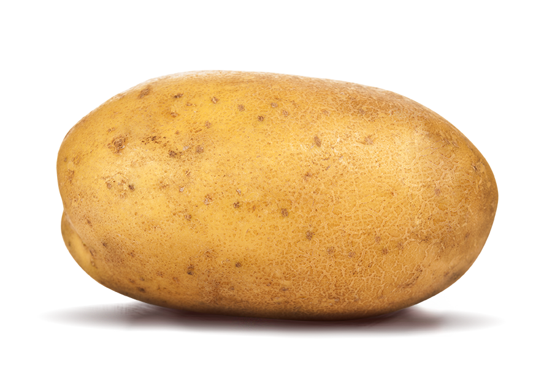
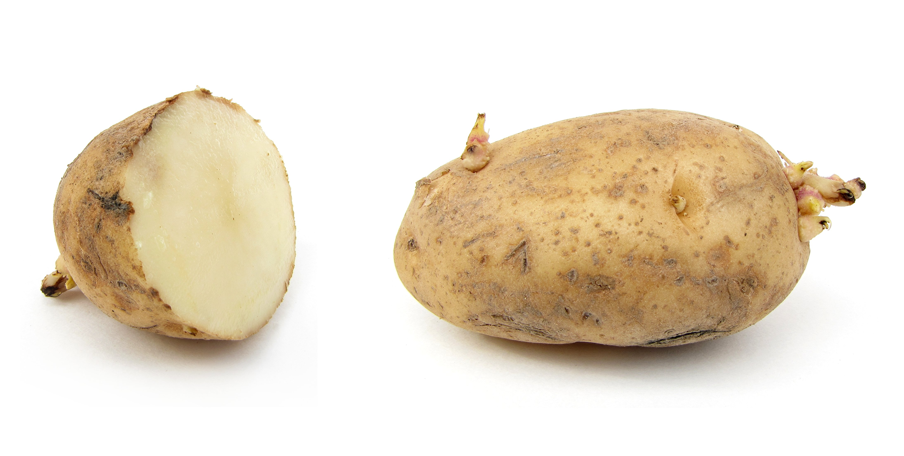
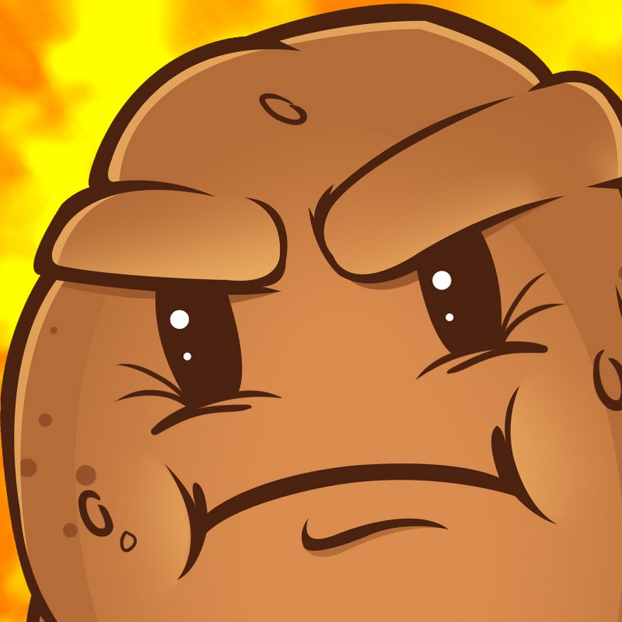
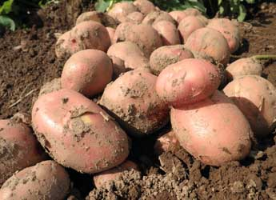
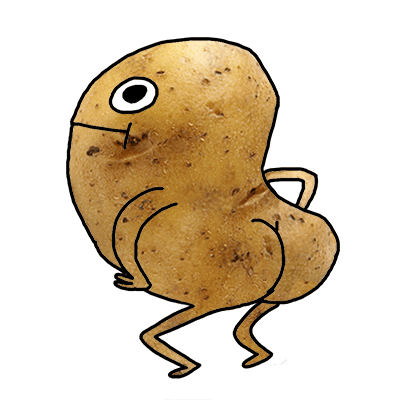
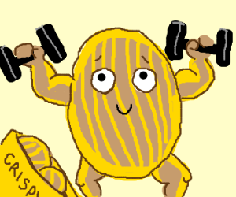

Anime
Game
Potato
About
☰
×
Anime
Game
Potato
About
POTATO

About Potato
The potato is a starchy, tuberous crop from the perennial nightshade Solanum tuberosum. The word "potato" may refer either to the plant itself or to the edible tuber. In the Andes, where the species is indigenous, some other closely related species are cultivated. Potatoes were introduced to Europe in the second half of the 16th century by the Spanish. Potato has become a staple food in many parts of the world and an integral part of much of the world's food supply. It is the world's fourth-largest food crop, following maize, wheat, and rice. The green leaves and green skins of tubers exposed to the light are toxic. Wild potato species can be found throughout the Americas from the United States to southern Chile. The potato was originally believed to have been domesticated independently in multiple locations, but later genetic testing of the wide variety of cultivars and wild species proved a single origin for potatoes in the area of present-day southern Peru and extreme northwestern Bolivia, where they were domesticated approximately 7,000-10,000 years ago. Following millenia of selective breeding, there are now over a thousand different types of potatoes. Over 99% of the presently cultivated potatoes worldwide descended from varieties that originated in the lowlands of south-central Chile, which have displaced formerly popular varieties from the Andes. However, the local importance of the potato is variable and changing rapidly. It remains an essential crop in Europe, where per capita production is still the highest in the world, but the most rapid expansion over the past few decades has occurred in southern and eastern Asia. As of 2007, China led the world in potato production, and nearly a third of the world's potatoes were harvested in China and India.
Etymology

The English word potato comes from Spanish patata. The Spanish Royal Academy says the Spanish word is a compound of the Taíno batata and the Quechua papa. The name potato originally referred to a type of sweet potato although the two plants are not closely related; in many of the chronicles detailing agriculture and plants, no distinction is made between the two. The 16th-century English herbalist John Gerard used the terms "bastard potatoes" and "Virginia potatoes" for this species, and referred to sweet potatoes as "common potatoes". Potatoes are occasionally referred to as "Irish potatoes" or "white potatoes" in the United States, to distinguish them from sweet potatoes. The name spud for a small potato comes from the digging of soil prior to the planting of potatoes. The word has an unknown origin and was originally used as a term for a short knife or dagger, probably related to Dutch spyd or the Latin "spad-" a word root meaning "sword"; cf. Spanish "espada", English "spade" and "spadroon". The word spud traces back to the 16th century. It subsequently transferred over to a variety of digging tools. Around 1845, the name transferred to the tuber itself. The origin of the word "spud" has erroneously been attributed to a 19th-century activist group dedicated to keeping the potato out of Britain, calling itself The Society for the Prevention of an Unwholesome Diet (S.P.U.D.). It was Mario Pei's 1949 The Story of Language that can be blamed for the word's false origin. Pei writes, "the potato, for its part, was in disrepute some centuries ago. Some Englishmen who did not fancy potatoes formed a Society for the Prevention of Unwholesome Diet. The initials of the main words in this title gave rise to spud." Like most other pre-20th century acronymic origins, this is false.
Characteristics

Potato plants are herbaceous perennials that grow about 60 cm high, depending on variety, with the leaves dying back after flowering, fruiting and tuber formation. They bear white, pink, red, blue, or purple flowers with yellow stamens. In general, the tubers of varieties with white flowers have white skins, while those of varieties with colored flowers tend to have pinkish skins. Potatoes are mostly cross-pollinated by insects such as bumblebees, which carry pollen from other potato plants, though a substantial amount of self-fertilizing occurs as well. Tubers form in response to decreasing day length, although this tendency has been minimized in commercial varieties. Potato plants After flowering, potato plants produce small green fruits that resemble green cherry tomatoes, each containing about 300 seeds. Like all parts of the plant except the tubers, the fruit contain the toxic alkaloid solanine and are therefore unsuitable for consumption. All new potato varieties are grown from seeds, also called "true potato seed", "TPS" or "botanical seed" to distinguish it from seed tubers. New varieties grown from seed can be propagated vegetatively by planting tubers, pieces of tubers cut to include at least one or two eyes, or cuttings, a practice used in greenhouses for the production of healthy seed tubers. Plants propagated from tubers are clones of the parent, whereas those propagated from seed produce a range of different varieties.
Genetics

There are about 5,000 potato varieties worldwide. Three thousand of them are found in the Andes alone, mainly in Peru, Bolivia, Ecuador, Chile, and Colombia. They belong to eight or nine species, depending on the taxonomic school. Apart from the 5,000 cultivated varieties, there are about 200 wild species and subspecies, many of which can be cross-bred with cultivated varieties. Cross-breeding has been done repeatedly to transfer resistances to certain pests and diseases from the gene pool of wild species to the gene pool of cultivated potato species. Genetically modified varieties have met public resistance in the United States and in the European Union. The major species grown worldwide is Solanum tuberosum (a tetraploid with 48 chromosomes), and modern varieties of this species are the most widely cultivated. There are also four diploid species (with 24 chromosomes): S. stenotomum, S. phureja, S. goniocalyx, and S. ajanhuiri. There are two triploid species (with 36 chromosomes): S. chaucha and S. juzepczukii. There is one pentaploid cultivated species (with 60 chromosomes): S. curtilobum. There are two major subspecies of Solanum tuberosum: andigena, or Andean; and tuberosum, or Chilean. The Andean potato is adapted to the short-day conditions prevalent in the mountainous equatorial and tropical regions where it originated; the Chilean potato, however, native to the Chiloé Archipelago, is adapted to the long-day conditions prevalent in the higher latitude region of southern Chile. The International Potato Center, based in Lima, Peru, holds an ISO-accredited collection of potato germplasm. The international Potato Genome Sequencing Consortium announced in 2009 that they had achieved a draft sequence of the potato genome. The potato genome contains 12 chromosomes and 860 million base pairs, making it a medium-sized plant genome. More than 99 percent of all current varieties of potatoes currently grown are direct descendants of a subspecies that once grew in the lowlands of south-central Chile. Nonetheless, genetic testing of the wide variety of cultivars and wild species affirms that all potato subspecies derive from a single origin in the area of present-day southern Peru and extreme northwestern Bolivia (from a species in the Solanum brevicaule complex). Most modern potatoes grown in North America arrived through European settlement and not independently from the South American sources, although at least one wild potato species, Solanum fendleri, is found as far north as Texas, where it is used in breeding for resistance to a nematode species that attacks cultivated potatoes. A secondary center of genetic variability of the potato is Mexico, where important wild species that have been used extensively in modern breeding are found, such as the hexaploid Solanum demissum, as a source of resistance to the devastating late blight disease. Another relative native to this region, Solanum bulbocastanum, has been used to genetically engineer the potato to resist potato blight. Potatoes yield abundantly with little effort, and adapt readily to diverse climates as long as the climate is cool and moist enough for the plants to gather sufficient water from the soil to form the starchy tubers. Potatoes do not keep very well in storage and are vulnerable to molds that feed on the stored tubers and quickly turn them rotten, whereas crops such as grain can be stored for several years with a low risk of rot. The yield of Calories per acre (about 9.2 million) is higher than that of maize (7.5 million), rice (7.4 million), wheat (3 million), or soybean (2.8 million).
Taste of potato

It taste very oiishi and very dry mouth...
...
...
...
...
...
...
...
...
after it became fries or chips ._.
The reason I put potato in here

Potatoes contain iron as well. Therefore, they help deliver oxygen to the brain as well. There are a wide variety of vitamins and minerals in potatoes that positively affect the function of the brain, including phosphorus, zinc, and the B complex vitamins that gamers and anime lover needed.
Potato saigo!
Copyright © Leon 2017